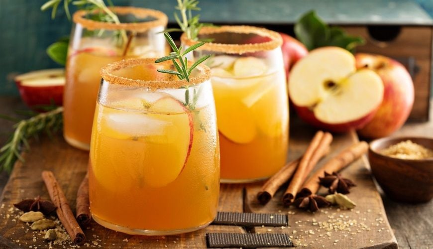
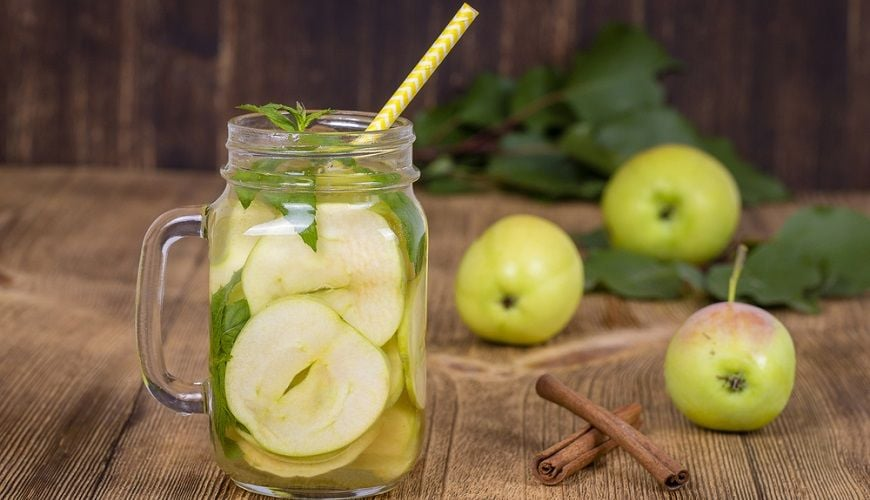
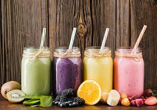
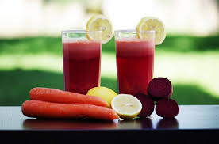
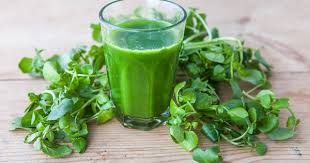
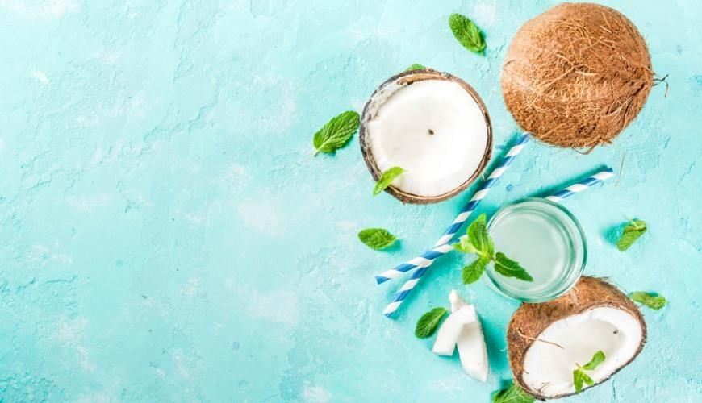

Thức uống từ chanh, cam, nha đam... được xem là các nhóm nước uống làm đẹp da có khả năng giúp da thêm mịn màng, sáng hồng tự nhiên cũng như hỗ trợ da ngăn ngừa mụn và lão hóa sớm.
Uống đủ nước — "Chìa khóa" cho làn da khỏe đẹp từ bên trong
Làn da chính là tấm gương phản chiếu trạng thái sức khỏe bên trong cơ thể. Khi các tế bào da được nuôi dưỡng kỹ càng từ bên trong thì sẽ phản ánh rõ ràng hơn ra bên ngoài. Đơn giản nhất để nuôi dưỡng tế bào da là đảm bảo đủ lượng nước lọc cần thiết.

Uống nước là cách bổ sung dinh dưỡng hiệu quả cho làn da
Lý do nên chọn nước uống đẹp da từ thành phần thiên nhiên?
Các loại nước uống làm đẹp da có thành phần từ trái cây hay rau xanh — phiên bản "nâng cấp" của nước lọc — giúp bổ sung cho cơ thể thêm nhiều vitamin và khoáng chất. Theo chuyên gia Frank Lipman — Người sáng lập Trung tâm chăm sóc sức khỏe Eleven Eleven: "Các chất dinh dưỡng trong nước trái cây đi vào máu nhanh hơn so với việc ăn trực tiếp".
6 công thức nước uống đẹp da đơn giản và hiệu quả
Những thực vật có màu xanh giúp cung cấp độ ẩm cho da nhanh chóng, kích hoạt hệ thống bạch huyết trong máu đến nuôi dưỡng làn da để giúp da thêm sáng màu.

Nước ép táo xanh kết hợp cùng các loại rau có khả năng cấp ẩm cho da nhanh
Acai là loại quả chứa nhiều dưỡng chất giảm lão hóa như omega-3 giúp duy trì cấu trúc và hoạt động của lớp màng tế bào, giúp tế bào da ngậm nước và khỏe mạnh. Uống hàng ngày, da càng thêm trẻ trung, rạng rỡ.

Acai chứa rất nhiều dưỡng chất chống oxy hóa cho da
Cà rốt cung cấp beta-carotene bảo vệ da khỏi tác hại môi trường. Củ cải đường mang đến nhiều chất giảm oxy hóa. Chanh giàu vitamin C chống nếp nhăn, cho làn da đều màu. Gừng giúp ngừa mụn.

Cà rốt là loại củ có khả năng bảo vệ da trước tác động môi trường
Cải xoong được xem là loại thuốc bổ từ thời cổ đại có hiệu quả làm sạch máu và thải độc gan, thúc đẩy sức khỏe toàn diện. Đặc biệt hiệu quả với tình trạng mụn trứng cá, chàm nám, phát ban và các bệnh nhiễm trùng da.

Cải xoong kết hợp cùng các loại trái cây khác tạo ra nước uống đẹp da thơm ngon
Cải xoăn chứa nhiều vitamin, khoáng chất và lượng nước lớn giúp giữ ẩm hiệu quả cho da và tóc. Bạc hà có khả năng giảm viêm. Nước dừa tăng cường chất ngừa oxy hóa, loại bỏ các gốc tự do gây hại.

Nước dừa tươi là nguồn nguyên liệu làm thức uống đẹp da hữu hiệu
Bột trà xanh là nguồn cung cấp dưỡng chất ngừa lão hóa mạnh mẽ — 1 ly matcha tương đương 10 ly trà xanh thông thường. Sữa hạnh nhân giàu vitamin B2 thúc đẩy hydrat hóa, hỗ trợ tuần hoàn máu. Cả hai đều dưỡng sáng da và bảo vệ khỏi gốc tự do.
Matcha cùng sữa hạnh nhân — nhất định phải thử để cải thiện sức khỏe làn da
Một vài lưu ý nhỏ khi làm nước uống đẹp da
Tươi sạch, là sản phẩm hữu cơ, rửa kỹ trước khi dùng là những yếu tố hàng đầu. Nguồn thực phẩm "bẩn" không chỉ không có công dụng cho da mà còn ảnh hưởng tiêu hóa, nặng hơn còn có nguy cơ gây ngộ độc.
Không nên uống khi quá no hay uống trong lúc ăn. Khung giờ thích hợp nhất là trước khi ăn sáng và sau bữa ăn từ 1–2 giờ. Mỗi người có thể tự điều chỉnh tùy phản ứng cơ thể và tình trạng sức khỏe.
Da thật sự không "thích" ngọt — chất ngọt có thể phá hủy tế bào da, khiến da xuống cấp và nếp nhăn xuất hiện sớm. Tối đa 1 muỗng cà phê đường mỗi lần. Với nước ép và sinh tố, chỉ nên giới hạn 2 khẩu phần/ngày — uống quá nhiều khiến vitamin và khoáng chất dư thừa bị đẩy ra ngoài lãng phí.
Duy trì uống hằng ngày trong vài tuần, bạn sẽ cảm thấy tình trạng da cải thiện đáng kể. Những công thức này có vẻ khá lạ và cần nhiều thành phần hơn, song sẽ giúp mùi vị thức uống thêm hấp dẫn và quan trọng nhất là bổ sung đa dạng dưỡng chất cho làn da của bạn.